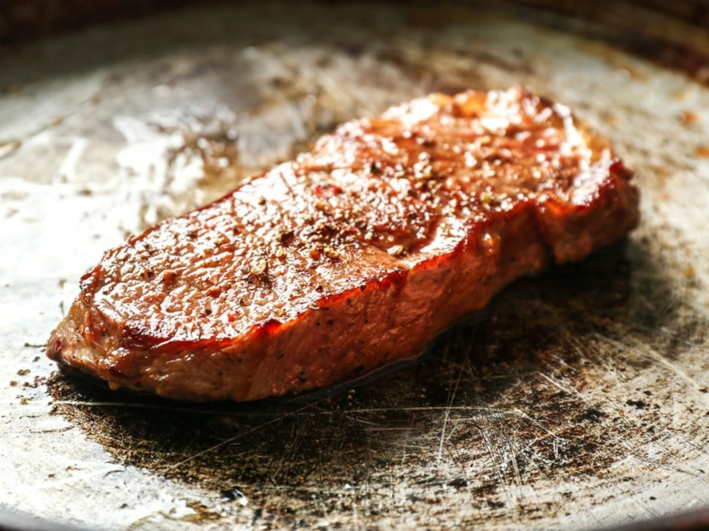

Steak

Description
A simple fried steak.
Ingredients
- Steak
- Salt
- Peper
- Garlic powder
- Any type of vegetable oil
Steps
- Let steak reach room temperature. Coat both sides in pepper, salt, and garlic powder.
- Heat pan with a layer of the oil until white smoke appears.
- Add steak to the pan and sear for 3-5 minutes per side until steak has reached desired doneness.
Go back